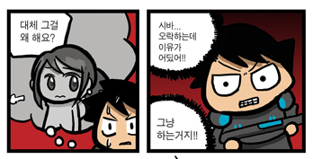
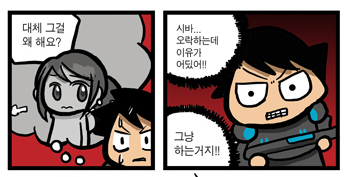

웹 프로그래머를 위한 서블릿 컨테이너의 이해
10/4/2012
예전 회사에서 서블릿 컨테이너 구현에 참여했었다. 그러는 동안 그 내부 구현 방법에 대해 책을 써 볼까 한 적이 많았다. 하지만 그때마다 김태길 선생의 수필 "글을 쓴다는 것" 의 그 유명한 구절
그런 와중에 회사를 옮기게 되었고 한 걸음 물러나 살펴 볼 여유를 가지게 되었다.
훈수꾼에게 수가 더 잘 보인다고 오히려 한 발 물러나 있는 시간을 가지면서 서블릿 컨테이너에 대해 전체적인 정리를 할 의욕이 충전되기 시작하였고 그때부터 개인 프로젝트로 서블릿 컨테이너를 바닥부터 다시 만들어보자 생각했다. (neurasthenia project)
왜 다시 처음부터 새로 구현했느냐 하면...

로 대답을 갈음한다. ㅎ
어찌되었건 neurasthenia 가 어느 정도 마무리가 된 이후 김태길 선생의 그 질문에 대해 그렇다 라고 답변을 할 수 있게 되었으며 책을 쓰기 시작했다.
지금까지 갈고 닦았던 경험을 이 책으로 한 번 정리하고자 했다.
여물지 않은 생각을 글로 쓴다는 것은 알을 얻기 위해 암탉의 배를 가르는 것과 같다을 되뇌며 내 배는 소중하니까 과연 내가 서블릿 컨테이너에 대해 진정 속속들이 정통하다 자신할 수 있는지에 대해 반문하고 금새 포기하곤 했다.
그런 와중에 회사를 옮기게 되었고 한 걸음 물러나 살펴 볼 여유를 가지게 되었다.
훈수꾼에게 수가 더 잘 보인다고 오히려 한 발 물러나 있는 시간을 가지면서 서블릿 컨테이너에 대해 전체적인 정리를 할 의욕이 충전되기 시작하였고 그때부터 개인 프로젝트로 서블릿 컨테이너를 바닥부터 다시 만들어보자 생각했다. (neurasthenia project)
왜 다시 처음부터 새로 구현했느냐 하면...

로 대답을 갈음한다. ㅎ
어찌되었건 neurasthenia 가 어느 정도 마무리가 된 이후 김태길 선생의 그 질문에 대해 그렇다 라고 답변을 할 수 있게 되었으며 책을 쓰기 시작했다.
지금까지 갈고 닦았던 경험을 이 책으로 한 번 정리하고자 했다.